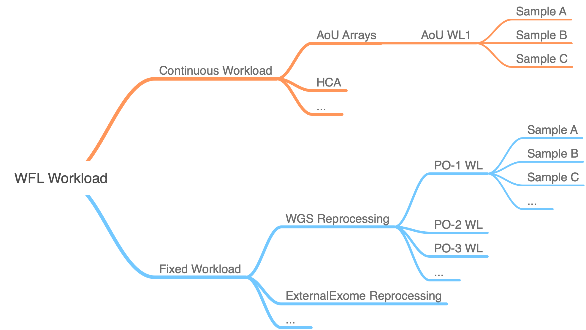

Modules Design Principles and Assumptions⚓︎
WorkFlow Launcher is responsible for preparing the required
workflow WDLs, inputs and options for Cromwell in a large scale.
This work involves in inputs validation, pipeline WDL orchestration
and Cromwell workflow management. Similar to other WFL modules, the
aou-arrays module takes advantage of the workload concept in order
to manage workflows efficiently.

In general, WFL classify all workloads into 2 categories: continuous and fixed.
For instance, aou-arrays module implements arrays workload as a continuous
workload, which means all samples are coming in like a continuous stream,
and WFL does not make any assumption of how many samples will be in the workload
or how to group the samples together: it hands off the workload creation and
starting process to its caller. wgs module implements External Whole Genome
workloads as a discrete workload that WFL has full knowledge about the number
and properties of the samples it's going to process, and the samples can be grouped
into batches (workloads) by a set of properties.
To learn more about the details of each module, please check their own sections in this documentation.
Create a workload⚓︎
Defining a workload type usually requires these top-level parameters.
| Parameter | Type | Required |
|---|---|---|
| cromwell | URL | |
| output | URL prefix | |
| pipeline | pipeline | |
| project | text | |
| common | object | |
| input | URL prefix | |
| items | object |
The parameters are used this way.
- The
cromwellURL specifies the Cromwell instance to service the workload. - The
outputURL prefix specifies the path you'd like WFL to dump the results to. It usually is a gs bucket. - The
pipelineenumeration implicitly identifies a data schema for the inputs to and outputs from the workload. You can think of it as the kind of workflow specified for the workload. People sometimes refer to this as the tag in that it is a well-known name for a Cromwell pipeline defined in WDL. You might also think ofpipelineas the external or official name of a WFL processing module. - The
projectis just some text to identify a researcher, billing entity, or cost object responsible for the workload. - The
commonis something common for all of the samples, such as the workflow options. For more details, check the docs for the specific type of workload you are trying to submit. - The
inputURL prefix specifies the path you'd like WFL to read (a batch of) sample(s) from. It usually is a gs bucket. - The
itemsis used to configure individual units of a workload. You can use it to tell WFL to treat arbitrary parts of the workload sepcially. For more details, check the docs for the specific type of workload you are trying to submit.